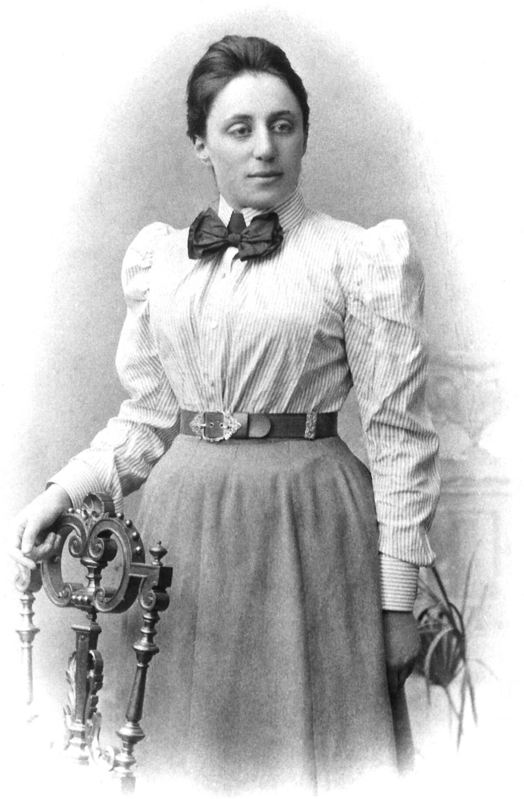

Page Not Found

Mujeres en la ciencia
de las que hubiera querido
aprender en la escuela
Idea original de Cleo Abram y su serie de TikTok
Emmy Noether
La mujer más importante en la historia
de la matemáticas según Einstein.
Famosa por su "Teorema de Noether", logró conectar las simetrías en matemáticas con las leyes de conservación la física.
"A cada magnitud conservada le correspondiente una simetría"
Dasia Taylor
Cuando estaba tan sólo en la preparatoria ella inventó un nuevo tipo de suturas que cambian de color cuando la herida se infecta. Ella aprovechó el cambio de pH de la piel de ácida a básica cuando esta se infecta. En definitiva una alternativa más accesible para pacientes postquirúrjicos.
Stephanie Kwolek
El 14 de marzo de 2019, Michelle Pratt, una oficial de policia de Oregon detuvo a una minivan como de rutina. Minutos más tarde, se esucharon tres disparos. Las balas alcanzaron su pierna, pecho y espalda pero estas últimas dos no le hicieron daño. Sobrevivió gracias a su chaleco antibalas, el cual está hecho de una sustancia llamada Kevlar. Stephanie es la química que inventó el Kevlar.